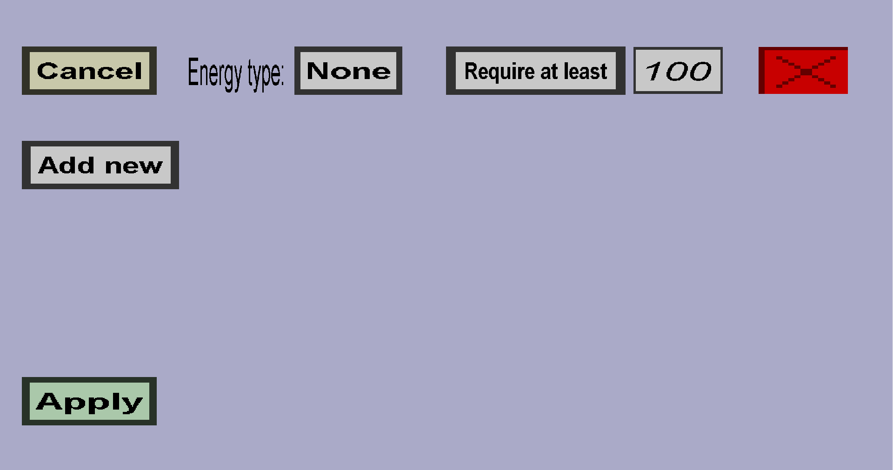

The container recipe energy menu can be used to configure whether a container recipe requires, generates,
or drains energy from its custom container. This menu should look like this:

In this menu, you can configure a list of energy entries, where each energy entry has the following properties:
-
An energy type: the stored energy from this energy type will be used.
-
An operation: the operation determines what happens with the stored energy.
There are 4 possible operations:
-
Require at least: the container recipe can only happen when its container has at least
value energy of the energy type.
-
Require at most: the container recipe can only happen when its container has at most
value energy of the energy type.
-
Decrease: the containers energy of the energy type will be decreased by
value. If this would cause the energy to go below the minimum value of energy type,
it will be set to the minimum value instead.
-
Increase: the containers energy of the energy type will be increased by
value. If this would cause the energy to go over the maximum value of energy type,
it will be set to the maximum value instead.
Note: when you use Decrease, you would normally also want to use Require at least with
the same value and energy type to ensure that there is enough energy to drain. (And similarly, you would
also want to use Require at most if you use Increase).
-
The value: this is the value/amount that is required or will be increased/decreased.